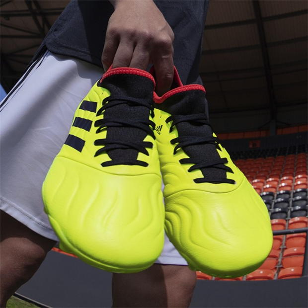
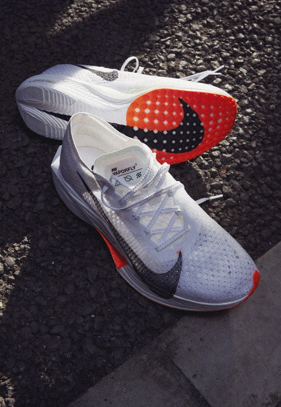
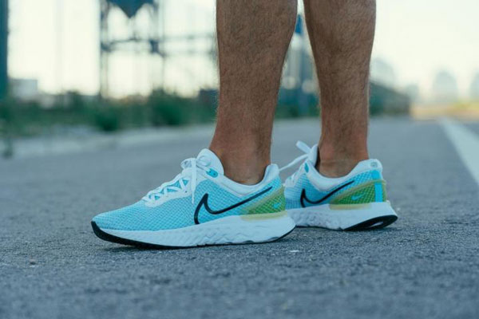
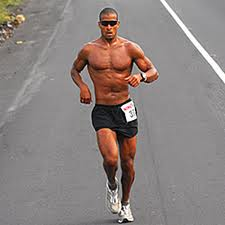

Estilo en Movimiento: Indumentaria Deportiva para Todas las Actividades
Domina el campo con estos botines de fútbol de alto rendimiento en un vibrante color amarillo. Diseñados para destacar en la cancha, estos botines te brindarán el confort y el control que necesitas para brillar en cada jugada.El espíritu de la pasión futbolística se fusiona con el estilo audaz de Boca Juniors en esta edición especial. Imagina cada paso en los colores emblemáticos mientras la imagen de una jugadora del equipo Boca Juniors usa estos botines, sintiendo la energía y la determinación que caracterizan a uno de los equipos más icónicos del fútbol.
Alcanza tus Metas como Goggins: Zapatillas de Alto Rendimiento
  "Las zapatillas que llevaron a David Goggins a conquistar desafíos extremos, ahora te inspirarán en tus propias metas de running."